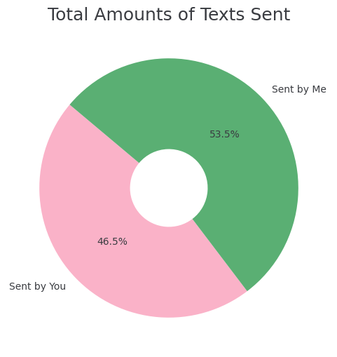
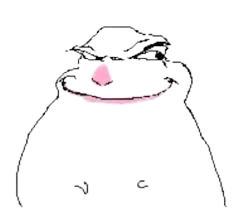
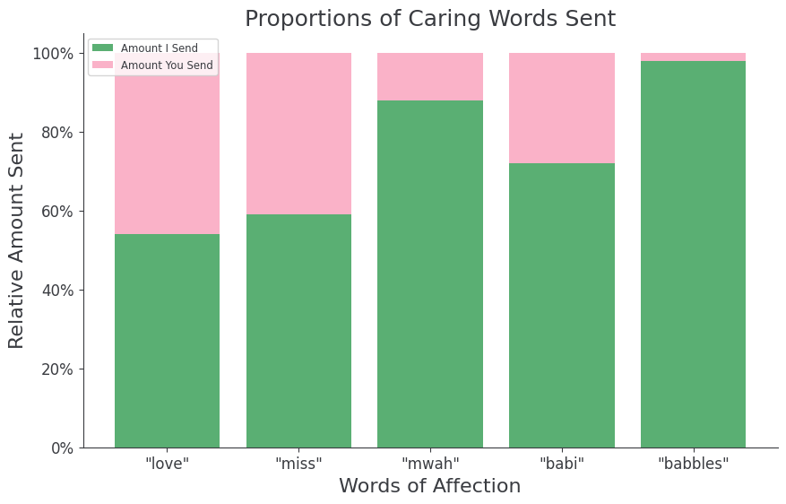
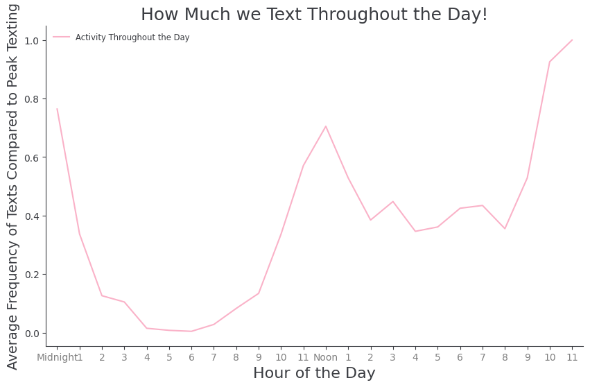

That's how many messages you've sent me (so far).
That averages to over 40 messages a day! You're in the top 0.01% of people who text me :)
I've texted you more than I've texted anybody else in my life -- combined. If I could track the amount of hours we've spent together on call, I'm sure it would be insanely impressive too: just like how you impress me every day with your stunning brilliance hehe. Buuuuuut, with all that being said, I still have texted you more than you've texted me :) Looks like you've got some work to do! :D

That this took a lot of work!
To make sure this website is accurate and personal, I downloaded a copy of our very own personal chat logs from its secure location on my laptop.
There are so many personal touches underscoring this whole website, I truly do hope you find most of them! In fact, I'd be overjoyed to tell you about some of them, if you're curious and want to ask me :) I hope you enjoy the experience of scrolling through this website, because it's personalized for you, and you alone. Not only that, I've got more ideas! I hope you'll keep checking in on this website periodically, because I only want to keep expanding it for you, so it can keep being a safe place for you that brings you joy. I love you, babbles!

Of the messages that contain 'babbles' were sent by me.
Of course, this only makes sense. In fact, I believe the only times you've sent me 'babbles' is when you questioned me the first time I used it. It's my name for you, so of course I've used it more! Nonetheless, I bring this and the other four words up because I want to show you the tip of the iceberg (unrelated, I wanna play music from the Titanic movie with you on flute btw) of how much I love you. I know love isn't encapsulated in the amount of times a person says lovey-dovey words, but I do think looking at things like that can help predict what kind of person would also love their partner in other ways too, and I would like to love you in every possible way that you want to be loved; that would be my dream :) I will keep writing you corny messages to express my love, and I'll keep coming up with new ways to impress you, for as long as I am able.

The hour of the day in which we send the most messages, believe it or not haha.
If you think about it, my guess as to why this is the case is because (especially lately) we do most of our texting late at night, when one of our roommates is asleep or something else happens that makes it so we can't talk out loud on call. I can remember many long strings of messages that I've sent when I've been in a situation where I can't talk, haha. I love texting you just as much as I love calling you, though! It reminds me of those days in Hawaii when I was with my family and couldn't call, but all I wanted to do was talk to you, so I texted alllllll day long. Or the very first days after I asked for your number (before we started to call each other), where I would spend every free second on my phone waiting for that next text from you to learn more about what kind of person you were and hopefully get closer to you. I have so many amazing memories from those days, and I hope texting me still gives you a similar joy it has always given me.

Hi babi... it's been a while hasn't it hehe :P I got pretty busy and sidetracked for a while there. I know that's not an excuse buttttt now that I've made the first step of updating the website again it'll be a lot easier to keep up with the development :) You know a lot of people say that the hardest step of anything is always the first one? I definitely agree with that. Especially now that I'm also working a lot with my inverted pendulum contest, it'll be easy for me to work on improving the website as well with my attention on ECE and computing anyways. What about you, babi? What initiatives have you been wanting to do for a while? Take the first step! There's no perfect moment that'll be any better than right this second right now :) Okay I'll talk to you soon babbles! I love you :)
Yours, Aadi
August 16, 2026SCARLETT (BABBLES) HYUN <3